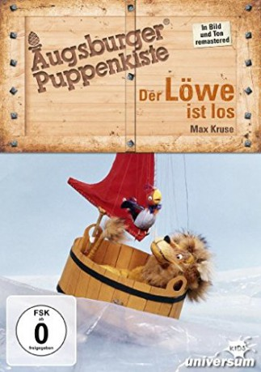

")
Alternativ: Kommt ein Löwe geflogen (Englischer Titel)
 
 IMDB-Wertung: 7.6 / 10
IMDB-Wertung: 7.6 / 10  Metascore:
Metascore: 
Der Löwe ist die Attraktion im kleinen Zoo der Stadt Irgendwo. Doch der König der Tiere langweilt sich schrecklich. Als der Tierarzt vergisst, die Käfig-Tür zu verriegeln, nutzt das Tier die Möglichkeit zur Flucht. In der kleinen, sonst so ruhigen Stadt herrscht Panik. Der Löwe ist allerdings inzwischen auf ein Boot spaziert und treibt damit aufs Meer. Ebenso wie die Kinder Komitte und Wibitte, die mit Schluckaufs Segelboot versuchen, Ka den Kakadu zu retten, dessen Kiste eine Welle vom Ufer weggespült hat. Sie alle bestehen weitere Abenteuer auf der Papageienfresserinsel und im Land Sultanien.
Jahr: 1966
Dauer: 27 Minuten
FSK: 0
Land: West-Deutschland Studio: S.A.D. Home EntertainmentTonspuren:
Untertitel:
Auflösung: SD (576x432) Größe: 275 MB
Regisseur: Manfred Jenning, Harald Schäfer
Drehbuch: Manfred Jenning, Max Kruse
Soundtrack:
Darsteller:
Datei: X:\Kinder Serien\Augsburger Puppenkiste\Kommt ein Löwe geflogen\Augsburger Puppenkiste - Kommt ein Löwe geflogen - 1 - Das Krozeppon.avi seit 16.11.2019
Festplatte: Kinder-Filme+Trick
 Es gibt insgesamt 56 Filme in der Gruppe 'Kinder Serien'
Es gibt insgesamt 56 Filme in der Gruppe 'Kinder Serien'